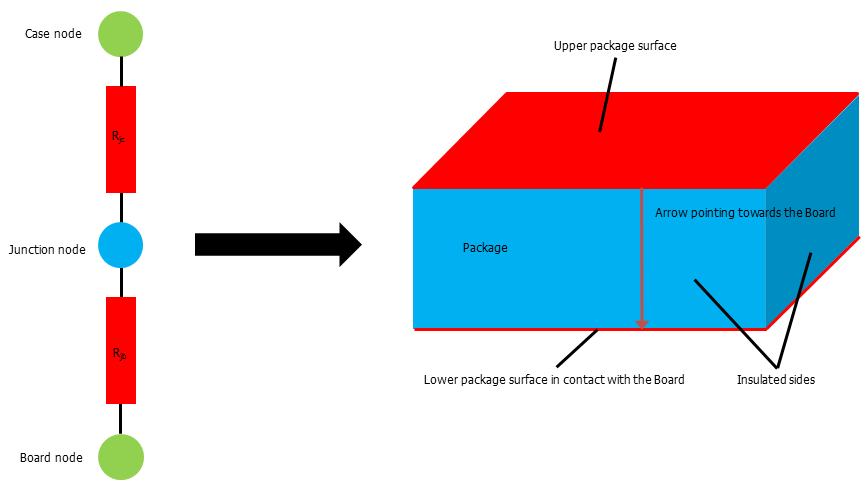

|
|
|
This object is used to create new two-resistor model sources for the Conjugate Heat Transfer Solver.
The two-resistor model can be used to approximate the thermal behavior of single-die packages that can be effectively represented by a single junction temperature. The model is based on the block-and-plate method described in the Two-Resistor Compact Thermal Model Guideline specified in the JEDEC standard JESD15-3.

Reset
Resets all internal settings to their default values.
Name ( name name )
Sets the name of the two-resistor model source. Each source must have a unique name.
Rename ( name oldname, name newname )
Renames the two-resistor model with the given oldname to the defined newname. A model with the new name must not already exist.
Folder ( name foldername )
Sets the name of the folder for the two-resistor model under creation. The folder will be created if it does not exist. If the name is empty, then the two-resistor model does not belong to a folder.
NewFolder ( name foldername )
Creates a new folder for two-resistor models with the given name. The name of the new folder (foldername) must be unique. Otherwise no new folder will be created.
RenameFolder ( name oldname, name newname )
Renames an existing two-resistor model folder from oldname to newname, if a folder with newname does not already exist. All items below the renamed folder will remain below the folder with the new name.
DeleteFolder ( string foldername )
Deletes an existing folder and all the contained elements.
Enable( bool flag )
Enables or disables the two-resistor model under creation depending on flag. If flag is false, the two-resistor model won't be considered for simulation.
EnableItem( name name, bool flag )
Enables or disables the (existing) two-resistor model with the given name depending on flag. If flag is false, the two-resistor model won't be considered for simulation.
Delete ( name name )
Deletes the two-resistor model with the given name.
Set ( string parameterName, variant parameterValues, ... )
To define special parameters for a two-resistor model, the command Set can be used. Available parameterNames are listed below. All settings must be made before the Create command is called.
|
parameterName |
parameterValues |
Default |
Meaning |
|
"Name" |
name itemName |
<empty / invalid> |
Specifies the name of the two-resistor model under creation (same as ".Name" command) |
|
"Face" |
<empty / invalid> |
The upper package surface of the two-resistor model package must be a planar face of an existing solid (brick). This solid is specified by solidName and the upper package surface is indicated by faceId which is the id of the face in the list of faces belonging to the specified solid. |
|
|
"OverwriteCaseEmissivity"
"CaseEmissivity" |
bool flag
double emissivity |
False
0.0 |
When enabled (flag = True), the user-defined emissivity is used to specify the upper package surface emissivity. Otherwise (flag = False), the emissivity of the material assigned to the package (Thermal) is used and the value of "CaseEmissivity" is ignored.. |
|
"DissipatedPower" |
double power |
0.0 |
Specifies the amount of power (in W) dissipated by the package. |
|
"JunctionToCase" |
0.0, "K/W" |
Specifies the junction-to-case thermal resistance R_jc in the given unit. |
|
|
"JunctionToBoard" |
0.0, "K/W" |
Specifies the junction-to-board thermal resistance R_jb in the given unit. |
|
|
"ContactPropertiesType"
|
enum type { "None", "Lumped", "Material" } |
"None" |
When the upper package surface is covered by a heat sink (or any solid) it might be useful to assign a contact property between the upper package surface and the heat sink to improve the thermal conduction. If the type "None" is specified, no contact property will be defined. The type "Lumped" is used to specify a lumped element, in this case a thermal resistance, see also "TIMResistance" or "TIMResistancePerUnitArea". The type "Material" is used to specify the thermal interface material, see also "TIMName" and "TIMThickness". |
|
"TIMResistance"
"TIMResistancePerUnitArea" |
double thermal_resistance
double thermal_resistance |
0.0 |
Will be considered only if the "ContactPropertiesType" is "Lumped". For the contact property, either the thermal resistance (in K/W) or the thermal resistance per unit area (in Km^2/W) can specified. |
|
"TIMName"
"TIMThickness" |
string materialName
double thickness |
0 |
Will be considered only if the "ContactPropertiesType" is "Material". The thermal interface material is defined by its thickness and its thermal conductivity. Both, "TIMName" (material name) and "TIMThickness" (thickness) must be specified. |
Create
Creates a two-resistor model source. All required settings for this object have to be made before the Create command is called and will be checked for correctness and consistency during the creation state.
Name ("")
Set "Face" ("", 0)
Set "OverwriteCaseEmissivity" (False)
Set "DissipatedPower" (0.0)
Set "JunctionToCase" (0.0)
Set "JunctionToBoard" (0.0)
Set "ContactPropertiesType" (None)
Enable (True)
Folder ("")
With CompactThermalModel
.Reset
.Set "Name", "two resistor model 1"
.Folder ""
.Enable "True"
.Set "Face", "component1:solid1", "1"
.Set "OverwriteCaseEmissivity", "True"
.Set "CaseEmissivity", "0"
.Set "DissipatedPower", "2"
.Set "JunctionToCase", "5.4", "C/W"
.Set "JunctionToBoard", "11.9", "C/W"
.Set "ContactPropertiesType", "Lumped"
.Set "TIMResistance", "1.5"
.Create
End With